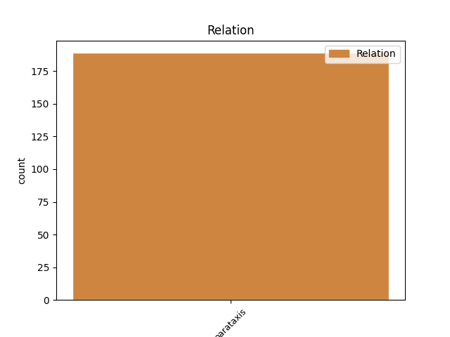
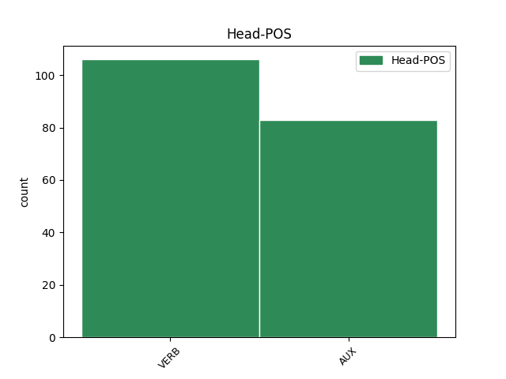
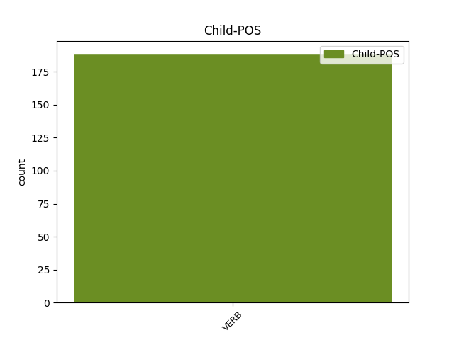

Distribution of features within this leaf



Agreement Rules sorted by frequency.
- When the dependent token is the parataxis(parataxis) of the head token, and the dependent token is VERB.
1 Wie _ _ _ _ 0 _ _ _
2 sehr _ _ _ _ 0 _ _ _
3 sie _ _ _ _ 0 _ _ _
4 dem _ _ _ _ 0 _ _ _
5 Jungen _ _ _ _ 0 _ _ _
6 aber _ _ _ _ 0 _ _ _
7 fehlte _ _ _ _ 0 _ _ _
8 , _ _ _ _ 0 _ _ _
9 zeigt zeigen VERB VVFIN Mood=Ind|Number=Sing|Person=3|Tense=Pres|VerbForm=Fin 0 _ _ _
10 sich _ _ _ _ 0 _ _ _
11 in _ _ _ _ 0 _ _ _
12 seiner _ _ _ _ 0 _ _ _
13 Geborgenheitssuche _ _ _ _ 0 _ _ _
14 in _ _ _ _ 0 _ _ _
15 der _ _ _ _ 0 _ _ _
16 Natur _ _ _ _ 0 _ _ _
17 , _ _ _ _ 0 _ _ _
18 aber _ _ _ _ 0 _ _ _
19 auch _ _ _ _ 0 _ _ _
20 an _ _ _ _ 0 _ _ _
21 dem _ _ _ _ 0 _ _ _
22 Tag _ _ _ _ 0 _ _ _
23 der _ _ _ _ 0 _ _ _
24 Aufnahme _ _ _ _ 0 _ _ _
25 in _ _ _ _ 0 _ _ _
26 das _ _ _ _ 0 _ _ _
27 Seminar _ _ _ _ 0 _ _ _
28 : _ _ _ _ 0 _ _ _
29 " _ _ _ _ 0 _ _ _
30 Wer _ _ _ _ 0 _ _ _
31 bei _ _ _ _ 0 _ _ _
32 dem _ _ _ _ 0 _ _ _
33 Eintritt _ _ _ _ 0 _ _ _
34 in _ _ _ _ 0 _ _ _
35 das _ _ _ _ 0 _ _ _
36 Klosterseminar _ _ _ _ 0 _ _ _
37 noch _ _ _ _ 0 _ _ _
38 eine _ _ _ _ 0 _ _ _
39 Mutter _ _ _ _ 0 _ _ _
40 gehabt _ _ _ _ 0 _ _ _
41 hat _ _ _ _ 0 _ _ _
42 , _ _ _ _ 0 _ _ _
43 der _ _ _ _ 0 _ _ _
44 denkt denken VERB VVFIN Mood=Ind|Number=Sing|Person=3|Tense=Pres|VerbForm=Fin 9 parataxis _ _
45 zeitlebens _ _ _ _ 0 _ _ _
46 an _ _ _ _ 0 _ _ _
47 jene _ _ _ _ 0 _ _ _
48 Tage _ _ _ _ 0 _ _ _
49 mit _ _ _ _ 0 _ _ _
50 Dankbarkeit _ _ _ _ 0 _ _ _
51 und _ _ _ _ 0 _ _ _
52 lächelnder _ _ _ _ 0 _ _ _
53 Rührung _ _ _ _ 0 _ _ _
54 . _ _ _ _ 0 _ _ _
Disagree Examples:
1 Hatte haben VERB VAFIN Mood=Ind|Number=Sing|Person=3|Tense=Past|VerbForm=Fin 5 parataxis _ _
2 einen _ _ _ _ 0 _ _ _
3 Platten _ _ _ _ 0 _ _ _
4 , _ _ _ _ 0 _ _ _
5 haben haben AUX VAFIN Mood=Ind|Number=Plur|Person=3|Tense=Pres|VerbForm=Fin 0 _ _ _
6 mir _ _ _ _ 0 _ _ _
7 den _ _ _ _ 0 _ _ _
8 neuen _ _ _ _ 0 _ _ _
9 schlauch _ _ _ _ 0 _ _ _
10 innerhalb _ _ _ _ 0 _ _ _
11 von _ _ _ _ 0 _ _ _
12 10 _ _ _ _ 0 _ _ _
13 min _ _ _ _ 0 _ _ _
14 kostenlos _ _ _ _ 0 _ _ _
15 eingebaut _ _ _ _ 0 _ _ _
16 und _ _ _ _ 0 _ _ _
17 zudem _ _ _ _ 0 _ _ _
18 noch _ _ _ _ 0 _ _ _
19 kleinere _ _ _ _ 0 _ _ _
20 " _ _ _ _ 0 _ _ _
21 schäden _ _ _ _ 0 _ _ _
22 " _ _ _ _ 0 _ _ _
23 des _ _ _ _ 0 _ _ _
24 Fahrrades _ _ _ _ 0 _ _ _
25 Repariert _ _ _ _ 0 _ _ _
26 ! _ _ _ _ 0 _ _ _
1 Ich _ _ _ _ 0 _ _ _
2 muß müssen AUX VMFIN Mood=Ind|Number=Sing|Person=1|Tense=Pres|VerbForm=Fin 0 _ _ _
3 leider _ _ _ _ 0 _ _ _
4 rügen _ _ _ _ 0 _ _ _
5 -- _ _ _ _ 0 _ _ _
6 Ich _ _ _ _ 0 _ _ _
7 hatte haben VERB VAFIN Mood=Ind|Number=Sing|Person=1|Tense=Past|VerbForm=Fin 2 parataxis _ _
8 eine _ _ _ _ 0 _ _ _
9 Gesichtsbehandlung _ _ _ _ 0 _ _ _
10 bei _ _ _ _ 0 _ _ _
11 Albrecht _ _ _ _ 0 _ _ _
12 und _ _ _ _ 0 _ _ _
13 bin _ _ _ _ 0 _ _ _
14 sehr _ _ _ _ 0 _ _ _
15 enttäuscht _ _ _ _ 0 _ _ _
16 . _ _ _ _ 0 _ _ _
1 Letzte _ _ _ _ 0 _ _ _
2 Woche _ _ _ _ 0 _ _ _
3 habe haben AUX VAFIN Mood=Ind|Number=Sing|Person=1|Tense=Pres|VerbForm=Fin 0 _ _ _
4 ich _ _ _ _ 0 _ _ _
5 den _ _ _ _ 0 _ _ _
6 Futon _ _ _ _ 0 _ _ _
7 ( _ _ _ _ 0 _ _ _
8 Baumwollfuton _ _ _ _ 0 _ _ _
9 ) _ _ _ _ 0 _ _ _
10 bestellt _ _ _ _ 0 _ _ _
11 , _ _ _ _ 0 _ _ _
12 heute _ _ _ _ 0 _ _ _
13 war sein VERB VAFIN Mood=Ind|Number=Sing|Person=3|Tense=Past|VerbForm=Fin 3 parataxis _ _
14 er _ _ _ _ 0 _ _ _
15 schon _ _ _ _ 0 _ _ _
16 bei _ _ _ _ 0 _ _ _
17 mir _ _ _ _ 0 _ _ _
18 . _ _ _ _ 0 _ _ _
1 Die _ _ _ _ 0 _ _ _
2 Modellbezeichnung _ _ _ _ 0 _ _ _
3 Electra _ _ _ _ 0 _ _ _
4 hatte haben VERB VAFIN Mood=Ind|Number=Sing|Person=3|Tense=Past|VerbForm=Fin 0 _ _ _
5 bei _ _ _ _ 0 _ _ _
6 Buick _ _ _ _ 0 _ _ _
7 eine _ _ _ _ 0 _ _ _
8 große _ _ _ _ 0 _ _ _
9 Tradition _ _ _ _ 0 _ _ _
10 seit _ _ _ _ 0 _ _ _
11 1959 _ _ _ _ 0 _ _ _
12 als _ _ _ _ 0 _ _ _
13 Electra _ _ _ _ 0 _ _ _
14 , _ _ _ _ 0 _ _ _
15 Invicta _ _ _ _ 0 _ _ _
16 und _ _ _ _ 0 _ _ _
17 LeSabre _ _ _ _ 0 _ _ _
18 zusammen _ _ _ _ 0 _ _ _
19 mit _ _ _ _ 0 _ _ _
20 einem _ _ _ _ 0 _ _ _
21 neuen _ _ _ _ 0 _ _ _
22 Design _ _ _ _ 0 _ _ _
23 die _ _ _ _ 0 _ _ _
24 Basis _ _ _ _ 0 _ _ _
25 der _ _ _ _ 0 _ _ _
26 Topmodelle _ _ _ _ 0 _ _ _
27 der _ _ _ _ 0 _ _ _
28 Buick _ _ _ _ 0 _ _ _
29 - _ _ _ _ 0 _ _ _
30 Palette _ _ _ _ 0 _ _ _
31 bildeten _ _ _ _ 0 _ _ _
32 ( _ _ _ _ 0 _ _ _
33 deshalb _ _ _ _ 0 _ _ _
34 symbolisiert symbolisieren VERB VVFIN Mood=Ind|Number=Sing|Person=3|Tense=Pres|VerbForm=Fin 4 parataxis _ _
35 auch _ _ _ _ 0 _ _ _
36 das _ _ _ _ 0 _ _ _
37 bis _ _ _ _ 0 _ _ _
38 heute _ _ _ _ 0 _ _ _
39 verwendete _ _ _ _ 0 _ _ _
40 Buick _ _ _ _ 0 _ _ _
41 - _ _ _ _ 0 _ _ _
42 Emblem _ _ _ _ 0 _ _ _
43 mit _ _ _ _ 0 _ _ _
44 seinen _ _ _ _ 0 _ _ _
45 drei _ _ _ _ 0 _ _ _
46 Wappenschildern _ _ _ _ 0 _ _ _
47 genau _ _ _ _ 0 _ _ _
48 diese _ _ _ _ 0 _ _ _
49 drei _ _ _ _ 0 _ _ _
50 Baureihen _ _ _ _ 0 _ _ _
51 ) _ _ _ _ 0 _ _ _
52 . _ _ _ _ 0 _ _ _
1 Beide _ _ _ _ 0 _ _ _
2 Inseln _ _ _ _ 0 _ _ _
3 sind sein AUX VAFIN Mood=Ind|Number=Plur|Person=3|Tense=Pres|VerbForm=Fin 0 _ _ _
4 schon _ _ _ _ 0 _ _ _
5 seit _ _ _ _ 0 _ _ _
6 Jahrtausenden _ _ _ _ 0 _ _ _
7 besiedelt _ _ _ _ 0 _ _ _
8 , _ _ _ _ 0 _ _ _
9 auf _ _ _ _ 0 _ _ _
10 der _ _ _ _ 0 _ _ _
11 Okishima _ _ _ _ 0 _ _ _
12 lebte leben VERB VVFIN Mood=Ind|Number=Sing|Person=3|Tense=Past|VerbForm=Fin 3 parataxis _ _
13 einst _ _ _ _ 0 _ _ _
14 ein _ _ _ _ 0 _ _ _
15 Vielfaches _ _ _ _ 0 _ _ _
16 der _ _ _ _ 0 _ _ _
17 heutigen _ _ _ _ 0 _ _ _
18 Bevölkerung _ _ _ _ 0 _ _ _
19 . _ _ _ _ 0 _ _ _